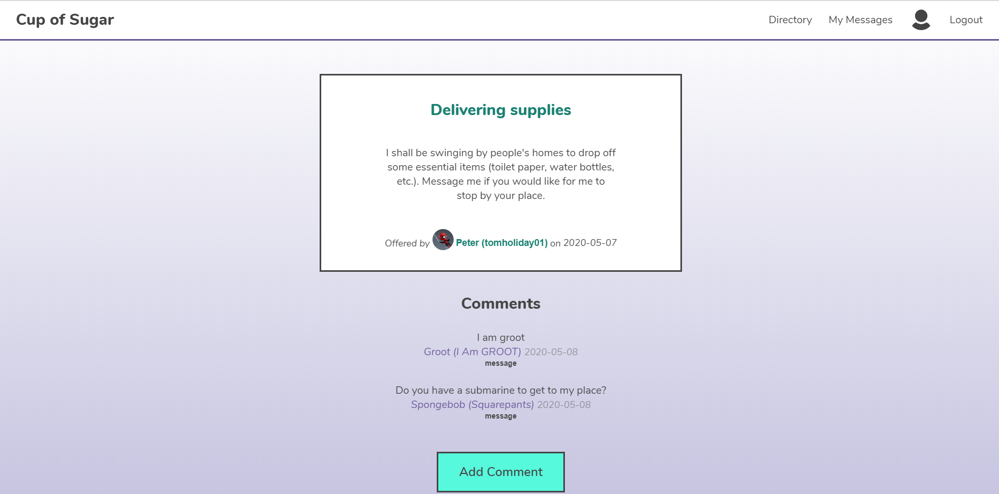
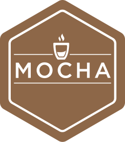
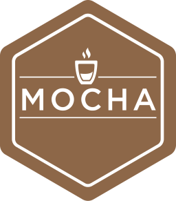
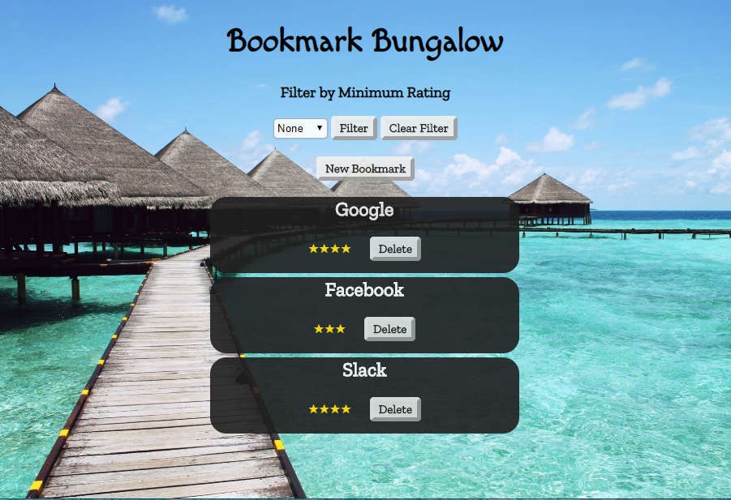

Daniel Fong
A Denver based full stack web developer
Creating accessible and attractive applications that captivate.
Projects
Cup of Sugar

 
")
A full stack project completed as part of a team of 3. Cup of Sugar is a localized, community-oriented application that aims to bring neighbors closer together by fostering connections based on mutual aid. Users can post offers and requests to a public bulletin board, where other users can respond by post comments or messaging other users privately.
DorianKrausz.com
A frontend portfolio project completed in one week, with minor revisions since then. Showcases an artwork collection and the artist.
Snapshot
A full stack solo application created in two weeks. Allows users to add players, games, and scores to keep track of physical (e.g. board and card) games.
Sermo
A full stack application completed with a pair in one week. Utilizes a spaced repetition algorithm to manipulate a linked list of words to teach the user Mandarin.
Bookmark Bungalow

Bring a slice of the tropics into your life with an app designed to save your favorite websites with a description, rating and link to the site itself. Bookmarks can be filtered by rating.